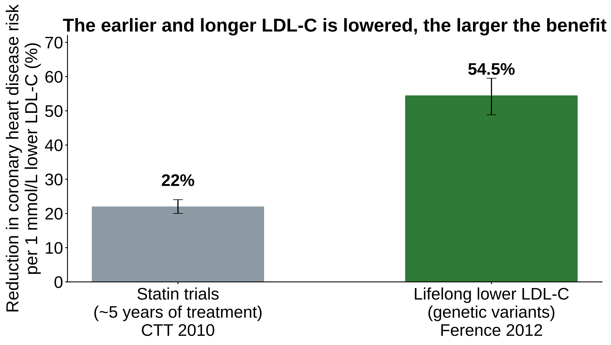
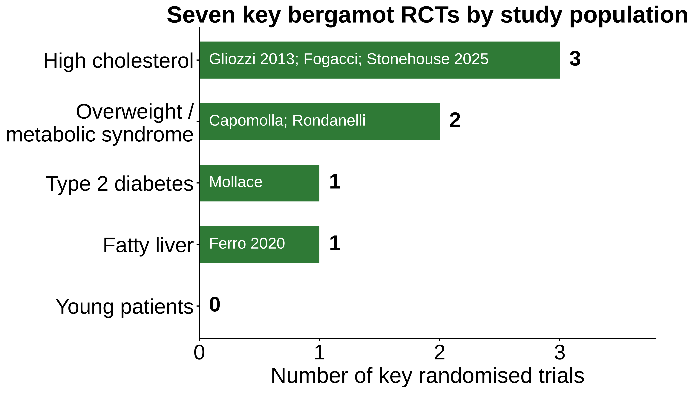
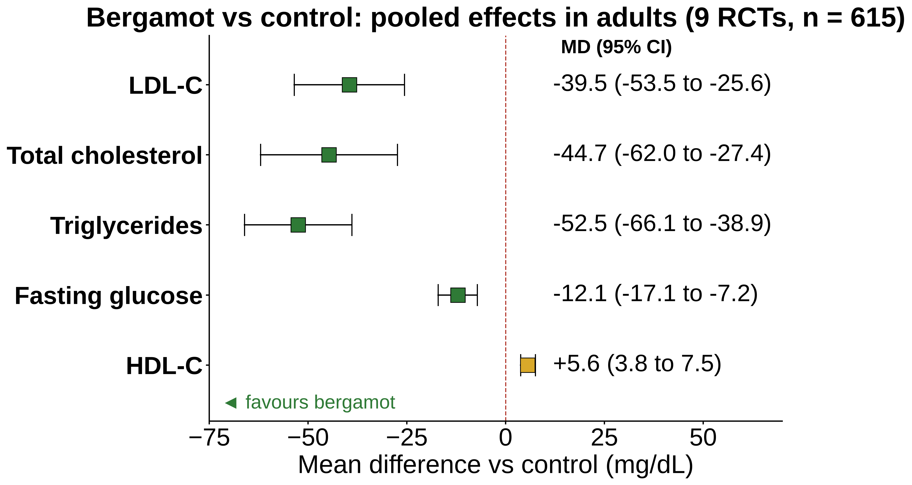
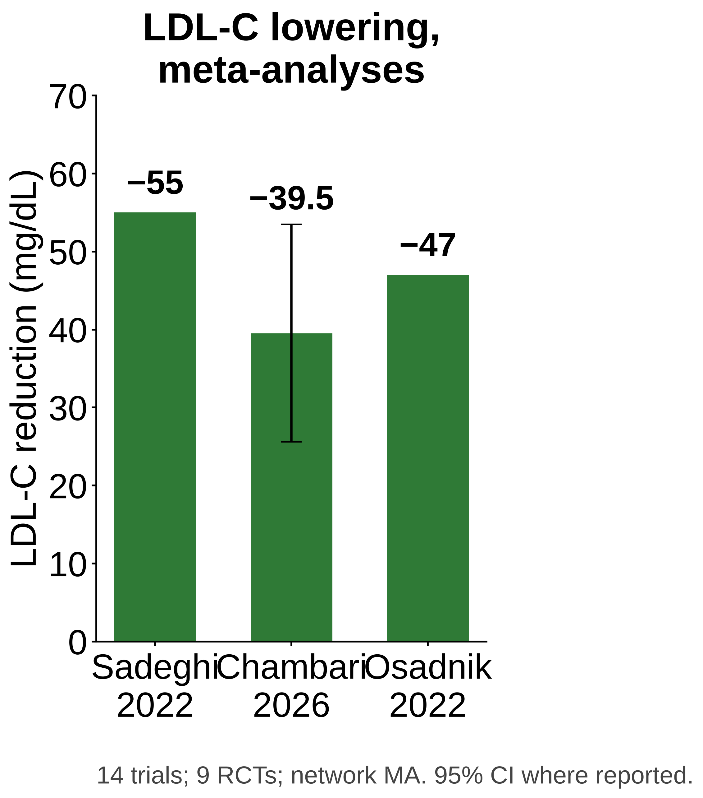
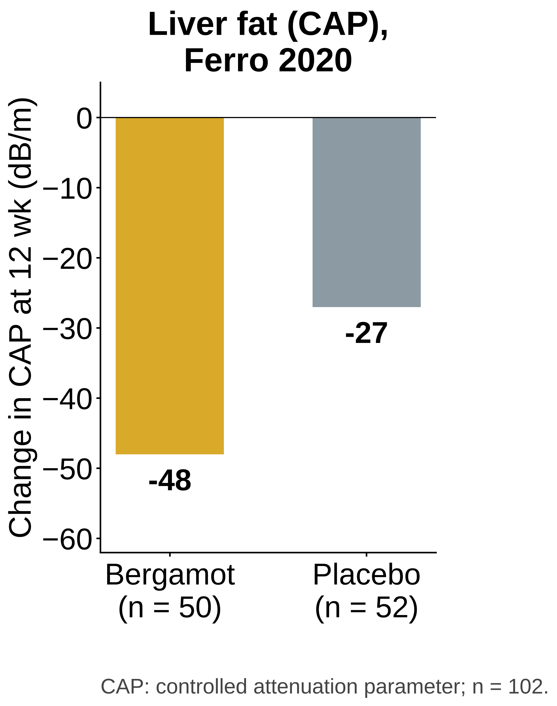

Before the statin:
Citrus bergamot
Background
- Starts in youth: childhood risk factors predict adult cardiovascular events (38,589 people followed for 35 years).
- Cumulative: 1 mmol/L lower LDL-C from early life ≈ 55% less coronary disease.
Schematic artery cross-sections. Jacobs, NEJM 2022 · Ference, JACC 2012
Why citrus bergamot?
Citrus bergamia is a citrus grown mainly in Calabria, Italy, and rich in flavanones. Two of them, brutieridin and melitidin, carry a statin-like side chain and are proposed to inhibit HMG-CoA reductase, the statin target.
Study hypothesis
Starting Citrus bergamot early in young patients with high cholesterol, who do not yet meet statin criteria, will lower LDL-C and linked cardiometabolic risk factors, and delay the need for statin therapy in the long run.
How bergamot may work
Mechanisms are proposed, mainly from laboratory and small human studies.
Statin vs bergamot
| Statin | Citrus bergamot | |
|---|---|---|
| Target | HMG-CoA reductase Proven | Same enzyme Proposed |
| LDL-C lowering | 30–50% or more | ≈ 40 mg/dL (adults) |
| Other effects | Small rise in diabetes risk | ↓ glucose, TG, BP, liver fat |
| Evidence | Large outcome trials Strong | Small RCTs Low |
| Young patients | Guideline use in FH | Not yet tested |
| Role | Treatment when indicated | Early step before statins? |
The principle behind the hypothesis

Lifelong lower LDL-C roughly doubles the per-mmol/L benefit seen in 5-year statin trials: the cumulative-exposure principle behind starting early. Error bars 95% CI. CTT, Lancet 2010; Ference, JACC 2012.
Early risk detection
Family history: premature heart disease in a close relative
Lipid profile: LDL-C, triglycerides, HDL-C, apoB
Lipoprotein(a): genetically determined; measure once
Genetic testing: polygenic risk score; FH variants (LDLR, APOB, PCSK9)
Metabolic profile: waist, blood pressure, glucose, liver fat
Hypothesis pathway
High cholesterol below statin criteria, no monogenic variant: lifestyle + bergamot, re-check every 6–12 months.Guideline care
Monogenic FH or very high LDL-C: statin as indicated. Bergamot is not a substitute.Universal lipid screening at 9–11 and 17–21 years (NHLBI 2011); Lp(a) once (EAS 2022).
Who has been studied?

Bergamot effects in adult RCTs



| Other pooled outcomes | HOMA-IR | Systolic BP | Waist |
|---|---|---|---|
| Mean difference (95% CI) | −0.38 (−0.65 to −0.11) | −2.1 mmHg (−3.3 to −0.9) | −0.96 cm (−1.91 to −0.01) |
Pooled from 9 RCTs, 615 adults (Chambari, Food Sci Nutr 2026). Every interval excludes zero. GRADE certainty: low to very low.
How to test the hypothesis
Recruit
Young patients with high cholesterol
Screen
Lipids, Lp(a), genetic score, metabolic signs
Sort
Monogenic FH → statin care; others enrolled
Randomise
Bergamot vs placebo, with lifestyle advice
Follow up
12 months; adherence, safety, growth
Measure
LDL-C, apoB, glucose, BP, liver fat
Long term
Time until a statin is needed
Atherosclerosis begins in youth and LDL-C damage accumulates over time. Citrus bergamot may improve several cardiometabolic risk factors in adults, making it a strong candidate to test as an early step to delay statin therapy in young patients.